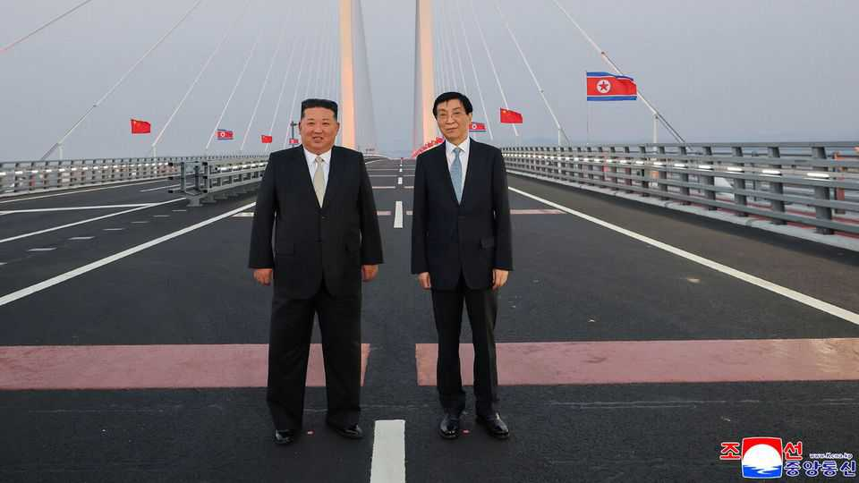

Kim Jong Un’s curious visit to China
North Korea’s dictator rebuilds ties with an old friend

Oct 29th 2026
Kim Jong Un, North Korea’s leader, rarely travels abroad. So his surprise visit on October 24th to Dandong, a Chinese city that borders on North Korea, deserves attention. Mr Kim is rebuilding ties with China after four years of cosying up to Russia (by sending it troops and supplies for the war in Ukraine). He may also be preparing for new diplomacy with America, and possibly a meeting with President Donald Trump in November.
The official purpose of Mr Kim’s latest visit was to commemorate China’s entry into the Korean war in 1950 to support the communist North. China and North Korea are playing up their wartime solidarity. This year is the 65th anniversary of their “friendship” treaty, a mutual-defence pact. Still, it is rare for Mr Kim to acknowledge China’s war effort so prominently on Chinese soil. He was also strikingly effusive about the relationship, hailing bilateral ties “forged in blood”.
It was unusual, too, for Mr Kim to show up in China without seeing its leader, Xi Jinping. The pair met in Pyongyang, the North Korean capital, in June when Mr Xi visited for the first time in seven years. That followed a summit between them in Beijing in 2025. This time, however, Mr Xi was busy preparing for a long-scheduled meeting of the Communist Party’s Central Committee in Beijing, which started on October 26th. He sent Wang Huning, who ranks fourth in China’s leadership, instead. On each of Mr Kim’s five previous visits to China since taking power, he spoke with Mr Xi in person.
Mr Kim normally crosses the border on his personal armoured train, which can also run on Chinese tracks. This time, he was driven in a Mercedes Maybach limousine across a bridge over the Yalu river, which separates the countries. The bridge was completed in 2014 as part of an earlier Chinese push to expand cross-border transport links. But its opening was repeatedly delayed after Mr Kim executed an uncle who had pioneered the project and was later accused of planning a coup (and was considered too close to China). It opened, at last, on October 15th.
Mr Kim’s visit and the bridge’s opening both seem to be designed to ease Chinese concerns about Russia’s growing influence over North Korea. China accounts for more than 90% of the country’s official global trade. But Mr Kim and Vladimir Putin, Russia’s leader, have drawn closer of late. In exchange for troops and weapons, Russia has supplied Mr Kim with fuel, food and military technology. The two countries signed a mutual-defence treaty in 2024. They have expanded their own cross-border infrastructure, including a road bridge that opened in September.
In response, Mr Xi has publicly played down his concerns about North Korea’s nuclear ambitions. At the same time, China has been upgrading transport links with North Korea and relaxing restrictions on cross-border trade. In the first nine months of the year, official bilateral trade reached $2.3bn, up from $1.9bn during the same period last year. Mr Wang said the new bridge would help to “expand personnel exchanges and trade co-operation”.
Most intriguingly, Mr Kim’s visit may have been intended to co-ordinate his diplomacy with America. Mr Trump met Mr Kim three times in his first term, hoping to strike a deal to end North Korea’s nuclear programme. Before two of those meetings, Mr Kim had travelled to China a few weeks previously, to talk to Mr Xi. America’s president has said that he would like to meet Mr Kim again, possibly during a summit of Asia-Pacific leaders in the southern Chinese city of Shenzhen in mid-November.
American officials have since sought to squash the idea, saying a meeting is unlikely. But some Chinese government advisers say Mr Xi is keen on one. He hopes to reassert his influence and ensure that China has a say in any potential deal between Messrs Trump and Kim. By pitting rival powers against each other, Mr Kim is once again playing a weak hand well. ■
Subscribers can sign up to Drum Tower, our new weekly newsletter, to understand what the world makes of China—and what China makes of the world.